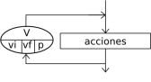

Lazos Para

La instrucción Para ejecuta una secuencia de instrucciones un número determinado de veces.
Para <variable> <- <inicial> Hasta <final> ( Con Paso <paso> ) Hacer
<instrucciones>
FinPara
Al ingresar al bloque, la variable <variable> recibe el valor <inicial> y se ejecuta la secuencia de instrucciones que forma el cuerpo del ciclo. Luego se incrementa la variable <variable> en <paso> unidades y se evalúa si el valor almacenado en <variable> superó al valor <final>. Si esto es falso se repite hasta que <variable> supere a <final>. Si se omite la cláusula Con Paso <paso>, la variable <variable> se incrementará en 1.